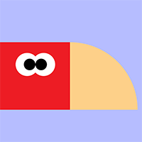
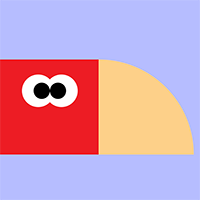

Welcome to my Page!
My name is Hollynn Scrima, I am currently a student at Seminole State College, and I plan to transfer to the University of Central Florida after the completion of my Associates Degree to persue a Bachelors Degree in Digital Media (Web Design). I am an aspiring web and graphic designer, and I've always been fond of creating and designing things. I more recently found joy in programming when I took a Javascript class in high school, so persuing web design allows me to pratice both of these skills that I enjoy. I'm only now beginning to fill my portfolio for web design, with this website being one of my examples, but I expect to have more experience under my belt once I start the program for my bachelor's degree. For now, this website will represent everything I've learned so far!

 
